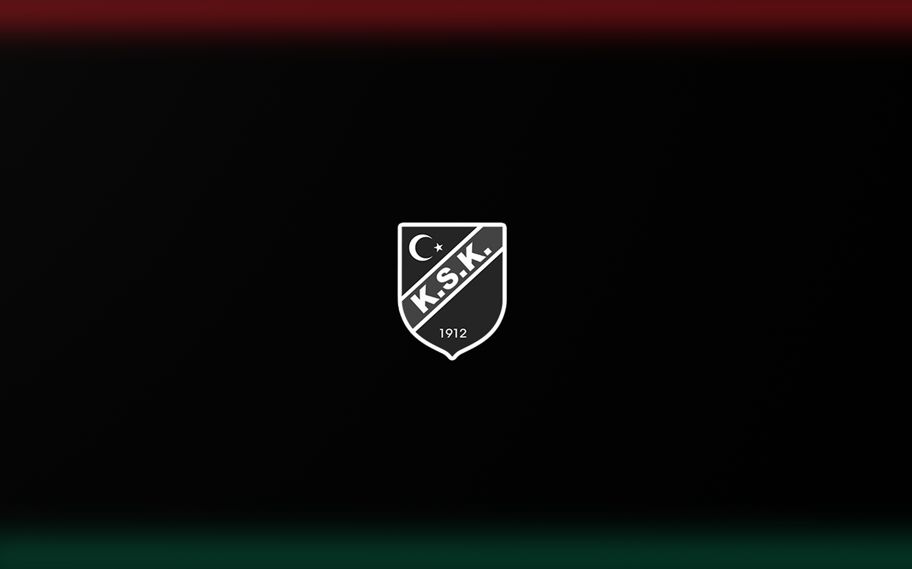

Merhaba, ben Sidar Yurdusever
Tarsus Üniversitesi Bilgisayar Mühendisliği lisans öğrencisiyim.
Projelerimi GörHakkımda
Merhaba! Ben Sidar, Bilgisayar mühendisliği alanında tutkuyla çalışan bir öğrenciyim. Kendimi geliştirme konusunda çok yol aldım. Amacım, yeteneklerimi kullanarak yenilikçi projelere katkı sağlamak, kalıcı değer yaratmak. Projelerinizi hayata geçirmek veya potansiyel iş birliklerini görüşmek için benimle iletişime geçmekten çekinmeyin.
CV İndirYeteneklerim
Projelerim
Otopark Takip Sistemi
Araçların girişini ve çıkışını takip eden bir sistem.
Kullanıcılar otoparkın kapasitesinin doluluk oranını görebilir.
=> Java, JFrame
Yapay Zeka Destekli Plaka Tanıma Sistemi
Kamera ile araç plakalarını tanıyan ve araç bilgilerini veren bir sistem.
=> Python, OpenCV, YOLO
İletişim
Benimle iletişime geçmekten çekinmeyin! Aşağıdaki e-posta adresini kullanabilir veya sosyal medya hesaplarımdan ulaşabilirsiniz. Proje teklifleri, işbirliği veya sadece bir merhaba demek için buradayım.
sidaryurdusever@gmail.com